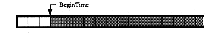
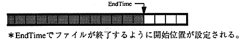
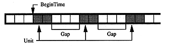

(3). To fill a gap
Specifying the Pack line invalidates the BeginTimeF and EndTimeF lines, but you may want to use the generated gap without specifying the Pack line. In such a case, use the channel that specifies the Reallocation line. In the example of not specifying the Pack line above, add a channel (channel number 3, data amount 7 sectors) with the following Reallocation line.
In channel 3 file source definition
- BeginTimeF 00:00:01
- UnitSize 1
- GapSize 0
Example: X33331122311223112231122
2.5 Relative time specification
In the
script, the position on the disk is specified by three types of relative positions.
Session relative time
Extent relative time
File relative time
Each has a start (BeginTime) and end (EndTime) specification. The relationship between the specified position and the actual data location is as follows.
(1). When BeginTime is specified

(2). When EndTime is specified

(3). When BeginTime, UnitSize, and GapSize are specified

(4). When EndTime, UnitSize, and GapSize are specified